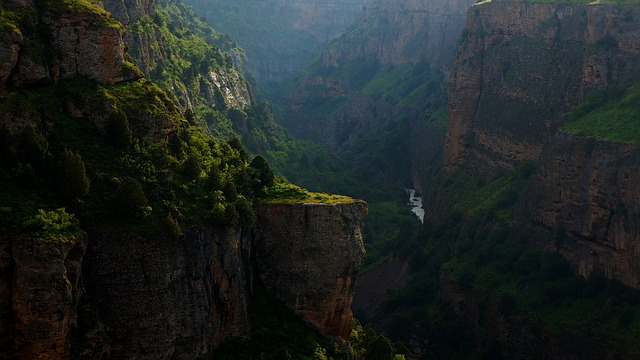

Have you ever seen a tree be cut down? Or seen that you see flowers dying quickly? That's because we have been treating nature wrongly. We have been throwing our trashin the woods like plastic, bottles, and more that are harning the wild life. Trees produce oxygen, while flowers and bugs help each other make more flowers because flowershold pollen. Pollen makes more flowers by bees and other insects carring the pollen.If we help nature,nature can help us with things like shelter, food, and more! If we care about nature, we also help... animals! Animals need nature too! Animals need them for the same things! Shelter and food, water and more! They also need space for... newborns! Newborns also need the things their parents need. We are here for nature, and nature is here for us.
If you want to know more information, please visit this website Atlas Nature Capital for more.
